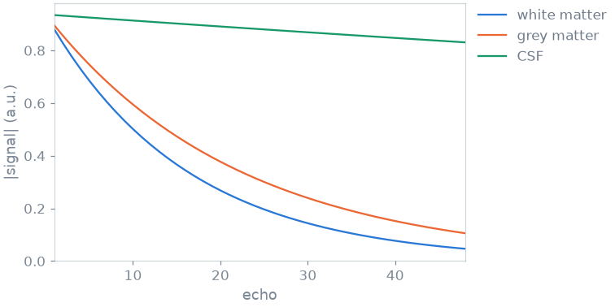
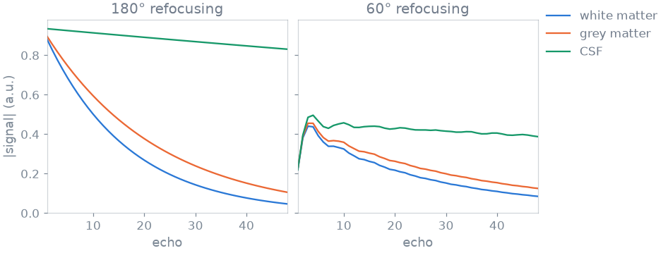
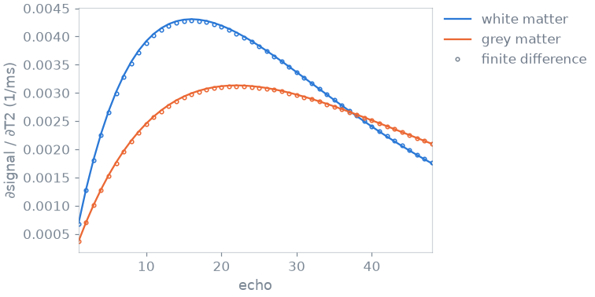

Note
Go to the end to download the full example code or to run this example in your browser via Binder.
1. Your first simulation#
blochsim computes the signal of an MR sequence for given tissue properties, together with its derivatives with respect to those properties and to the sequence parameters. This lesson uses the fast spin echo (FSE) simulator shipped with blochsim: you simulate three tissues, change the refocusing angle, and compute the derivative of the signal with respect to T2.
Learning objectives
Construct a shipped simulator and evaluate it for several tissues.
Take the derivative of the signal with respect to a tissue property.
Choose how many configuration states to keep, and where the simulation runs.
Next: 2. Advanced physics, where the same sequence meets B1, off resonance, magnetization transfer, diffusion and flow.
Sequence#
The sequence is a CPMG echo train: a 90-degree excitation followed by 48 refocusing pulses, echo spacing (ESP) 5 ms, repetition time 3 s.
Each shipped sequence is a simulator class, constructed from its sequence parameters. Times are in milliseconds and angles in degrees. The refocusing angles are given per echo, so variable flip angle trains use the same interface.
import torch
from blochsim.simulators import FSESimulator
fse = FSESimulator(ESP=5.0, TR=3000.0)
flip = torch.full((48,), 180.0)
Tissue#
Tissue properties are passed at call time; here T1 and T2, in milliseconds. Each simulator accepts scalar and tensor-valued inputs. Tensor-valued inputs are simulated in parallel, over multiple CPU threads or on a GPU if available. The three entries below approximate white matter, grey matter and cerebrospinal fluid, with a common T1 of 1 s:
T2 = torch.tensor([80.0, 110.0, 2000.0])
signal = fse.simulate(flip=flip, T1=1000.0, T2=T2)
print(signal.shape)

torch.Size([3, 48])
The output has one row per tissue and one column per echo. With ideal 180-degree refocusing each train decays as exp(-TE/T2).
Sequence parameters#
Clinical FSE protocols often use refocusing angles below 180 degrees to
reduce SAR, which scales with the square of the flip angle. At 60 degrees more
coherence pathways contribute, so more configuration states are retained
(states, discussed below):

With 60-degree refocusing, part of the magnetization is stored along z and returns as stimulated echoes. The first echoes oscillate before the train approaches a pseudo steady state, and the late echoes decay more slowly than exp(-TE/T2). blochsim models all coherence pathways with the extended phase graph (EPG) formalism; see the EPG explanation.
Tissue derivatives#
Model-based T2 fitting, as well as Cramér-Rao bound analysis, needs the
derivative of the signal with respect to T2. jacobian returns the signal
and its derivatives with respect to the named properties:
signal, dT2 = fse.jacobian("T2", flip=flip, T1=1000.0, T2=T2)
The derivative is computed in forward mode alongside the signal, not by finite differences. As a check, compare it with a forward difference over a 1 ms step:

largest difference: 7.7e-03
The two agree to within the truncation error of the finite difference. The
sensitivity to T2 peaks at TE close to T2. Passing several names,
jacobian(("T1", "T2"), ...), returns one derivative per property.
Accuracy and devices#
Two settings control accuracy and cost. Both can be passed to the constructor or to the call.
states is the number of EPG configuration states retained. A train of N
refocusing pulses populates at most N states, so 48 is exact here. The FSE
simulator defaults to 10, which is sufficient for near-180-degree trains.
Truncation is a systematic error, so check it against the exact number when
the refocusing angle is low:
flip60 = torch.full((48,), 60.0)
reference = fse.simulate(flip=flip60, T1=1000.0, T2=T2, states=48)
for states in (10, 24, 32):
approximate = fse.simulate(flip=flip60, T1=1000.0, T2=T2, states=states)
error = (approximate - reference).abs().max() / reference.abs().max()
print(f"{states:2d} states: {error:.0%} off")
10 states: 8% off
24 states: 6% off
32 states: 6% off
The 60-degree train requires the full 48 states, which the previous figure used.
execution= selects the device. By default ("auto") a small problem
runs where its tensors are, and a large one is cut into chunks of voxels
spread over every GPU, each sized to the card’s free memory; the signal comes
back where the tensors are. "cpu" or a named device overrides this:
on_cpu = fse.simulate(flip=flip, T1=1000.0, T2=T2, execution="cpu")
The first call resolves the sequence structure; later calls only rebind numerical values. Construct a simulator once and reuse it inside loops.
Each shipped sequence also has a functional form, convenient for one-off calls:
Specification#
What this lesson did, stated the way you would ask an agent for it:
With blochsim, simulate a fast spin echo of 48 echoes, 5 ms apart, TR 3 s,
in white matter, grey matter and CSF (T1 1 s; T2 80, 110 and 2000 ms).
Compare 180 and 60 degree refocusing trains. Return the derivative of the
signal with respect to T2, checked against a finite difference, and check
that the number of configuration states kept is enough for the 60 degree
train.
Total running time of the script: (0 minutes 1.709 seconds)